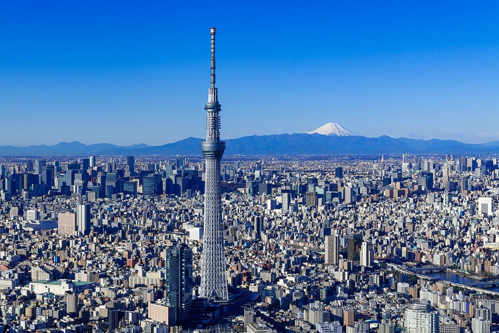
Destination Guide · HND · Japan
Tokyo
Neon crossings, quiet gardens, temple courtyards and some of the best food on earth. Here's where to stay, what to see, and where to eat in Japan's capital.
Home / Destinations / Tokyo
Best for
Food, neon, gardens
Fly into
Haneda · HND
Currency
Japanese Yen
Plan This Trip
Search flights and hotels for Tokyo right here — no extra tabs.
Or search with Kiwi.com
Why go
Tokyo is a city of villages stitched together by some of the world's best trains: the temple courtyards of Asakusa, the electronics and anime shops of Akihabara, the department-store glow of Ginza, the scramble of Shibuya and the skyscraper district of Shinjuku. Between them sit gardens and parks that feel a world away from the crowds.
This guide covers the sights that anchor a first visit, a short list of hotels people book, and a few places to eat in Shinjuku and beyond. Every photo here is a real place, not stock imagery.
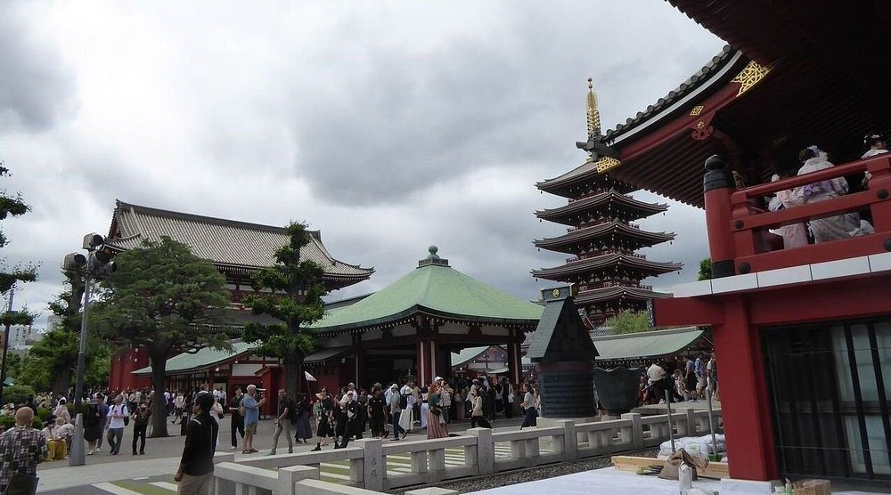
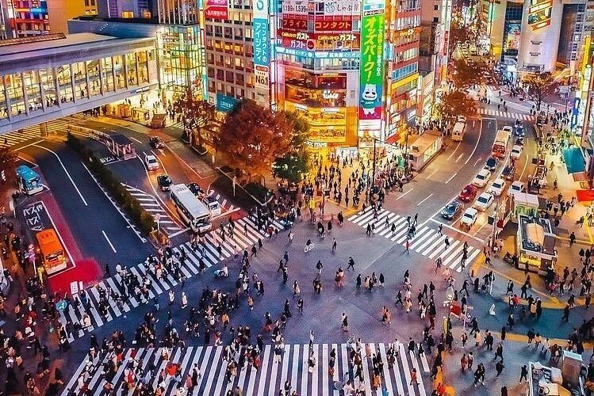
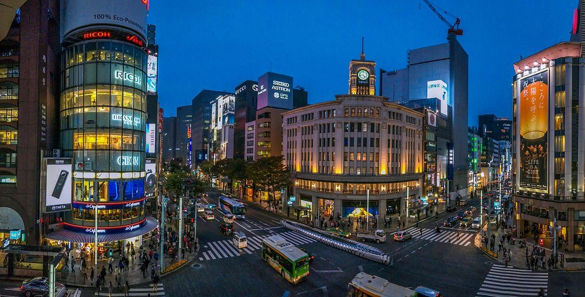
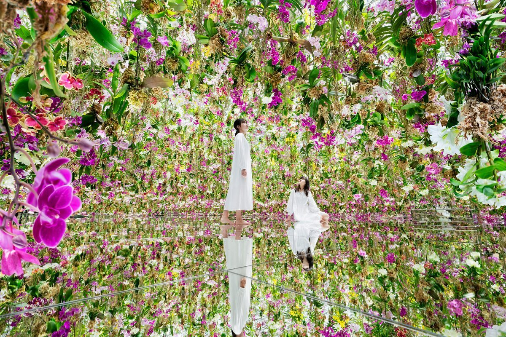
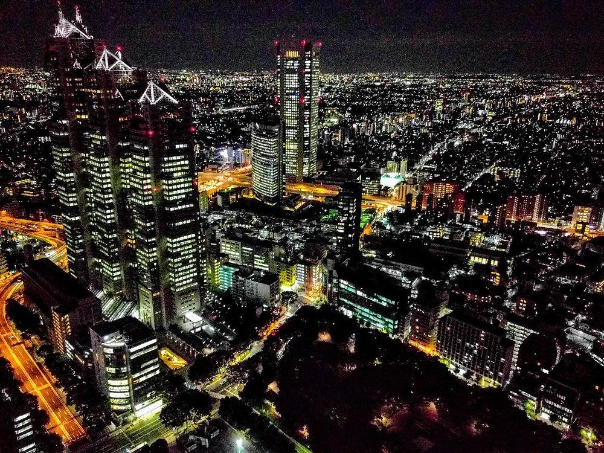
Things to see & do
Neon crossings, temples and city views
From the five-storey pagoda at Senso-ji to the scramble at Shibuya — the sights that anchor a first visit, spread across the best-known districts.
Asakusa
Senso-ji
The oldest temple in Tokyo, with a five-storey pagoda and busy courtyards. Go early in the day to beat the crowds.
Shibuya
Shibuya Crossing
One of the busiest pedestrian crossings in the world. Watch the scramble from a nearby window or rooftop, then join it.
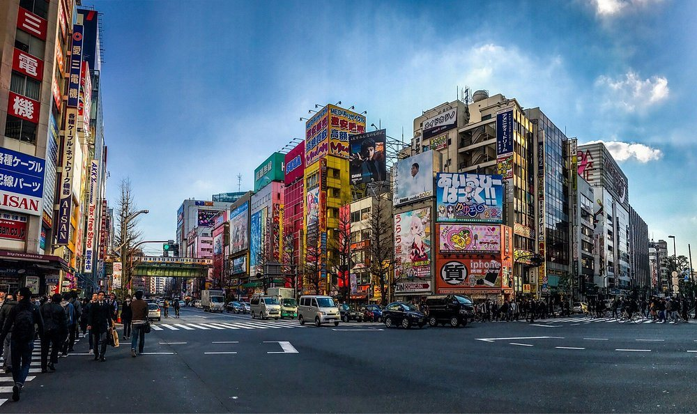
Akihabara
Akihabara
Multi-storey electronics stores, anime and manga shops and arcades packed into a few neon-lit blocks.
Ginza
Ginza
The upmarket shopping district, with flagship stores around the Wako clock tower, glowing best at blue hour.
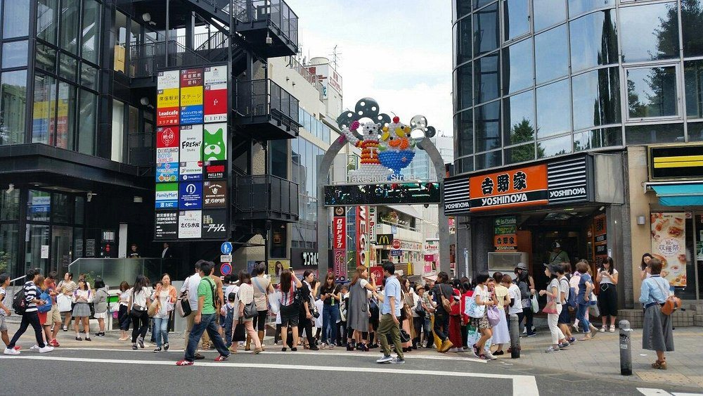
Harajuku
Takeshita Street
A narrow, crowded lane of fashion shops, crepe stands and pop-culture stores in the heart of Harajuku.
Digital art
teamLab
An immersive digital art experience, shown here as a room of hanging orchids over a mirrored floor. Check the current location and book ahead.
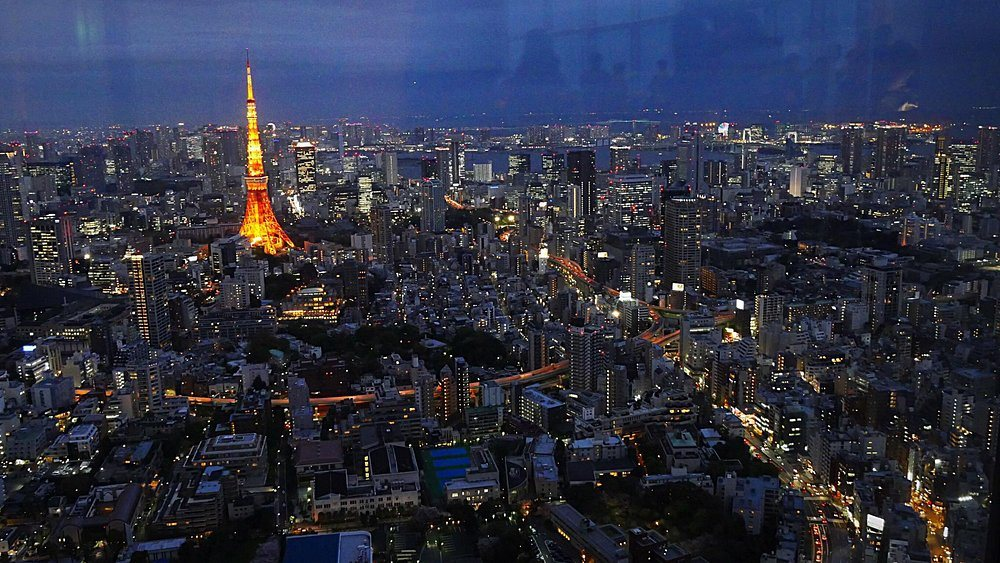
Minato
Tokyo Tower
The orange-and-white lattice tower is a symbol of the city and looks its best lit up against the night skyline.
Shinjuku
Shinjuku at night
The skyscraper district glitters after dark. The Tokyo Metropolitan Government Building has free observation decks if you want the view.
A green afternoon
Gardens and cherry blossom
The gardens are the quickest escape from the crowds. Visit in late March and early April for cherry blossom, or in autumn for the colours.
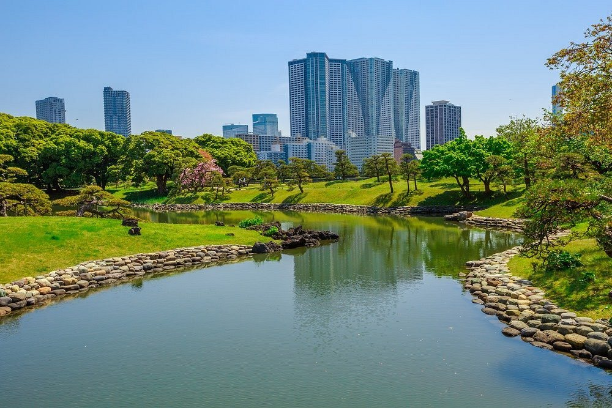
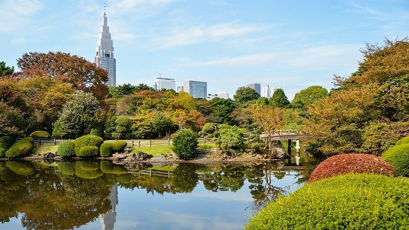
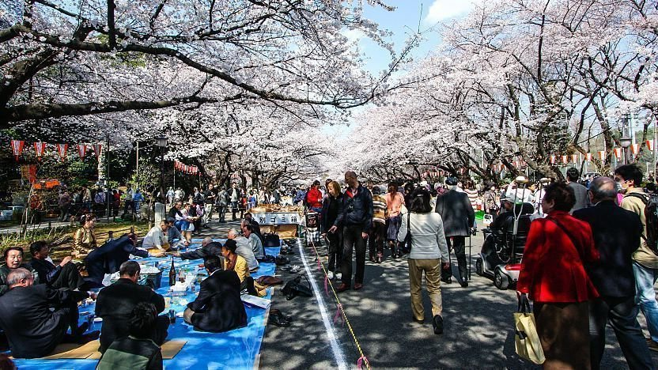
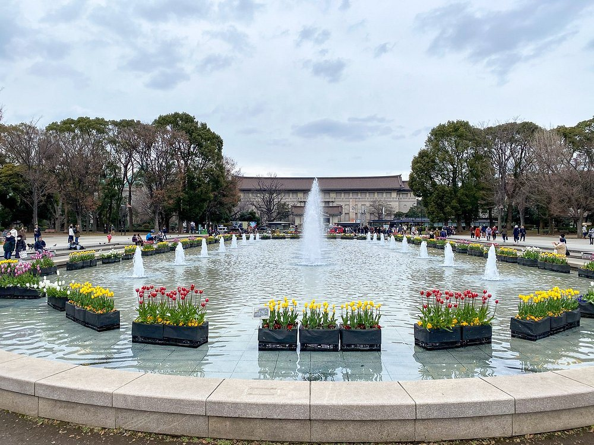
Where to Stay — Tokyo
From a Shinjuku landmark to a ryokan-inspired hotel in Otemachi — we track rates across the names that come up again and again.
Where to eat
A short, honest list
Tokyo has more restaurants than any city should. These are three we would send a first-time visitor to, across seafood, sushi and wagyu.
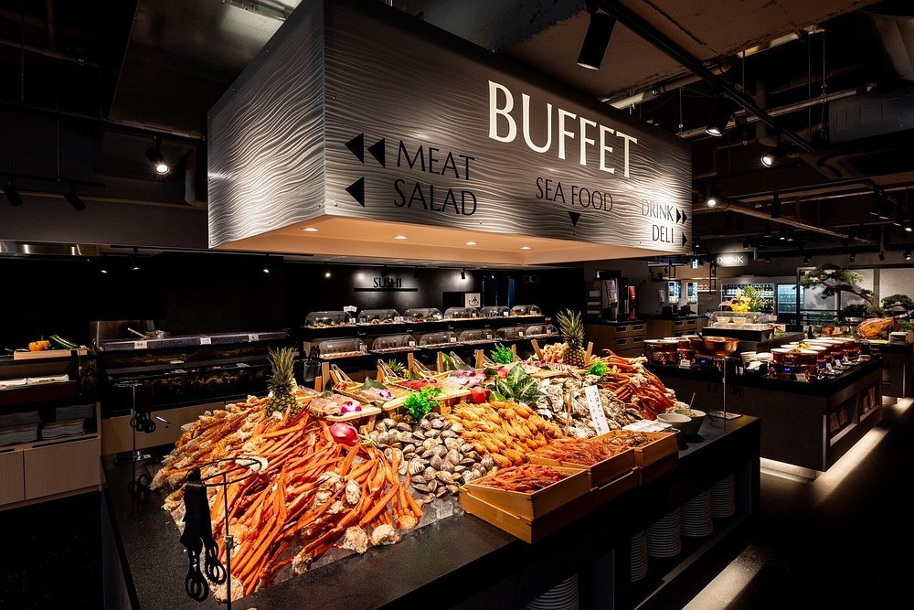
Shinjuku
Ginza Happo
A seafood-led buffet with piles of crab and shellfish, a sushi counter, meat and salad stations and a deli.
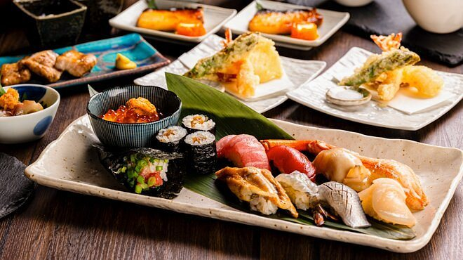
Shinjuku
Sushi Yama
Sushi and tempura served on stone-glazed plates, with rolls, nigiri and a small bowl of salmon roe.
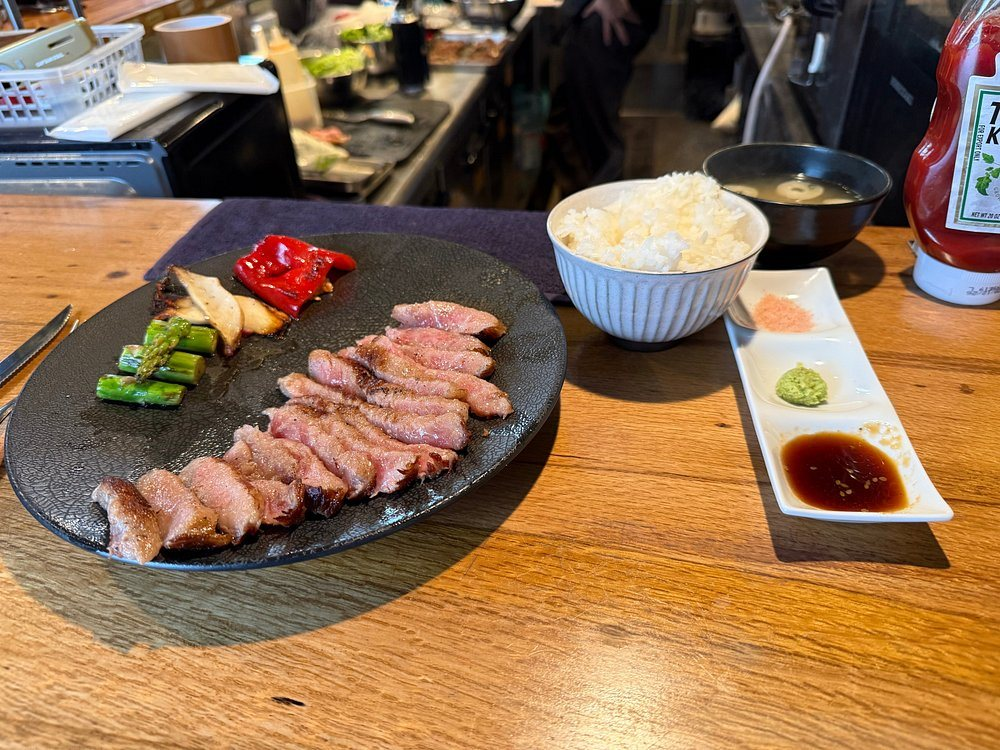
Shinjuku · Halal wagyu
Halal Wagyu Yakiniku Gyumon Shibuya
A halal wagyu yakiniku restaurant in Shinjuku, here a sliced wagyu steak set with rice, miso soup and dipping sauces.
Getting there
Landing in Tokyo
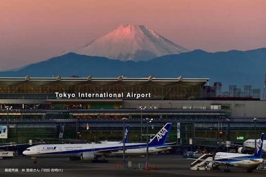
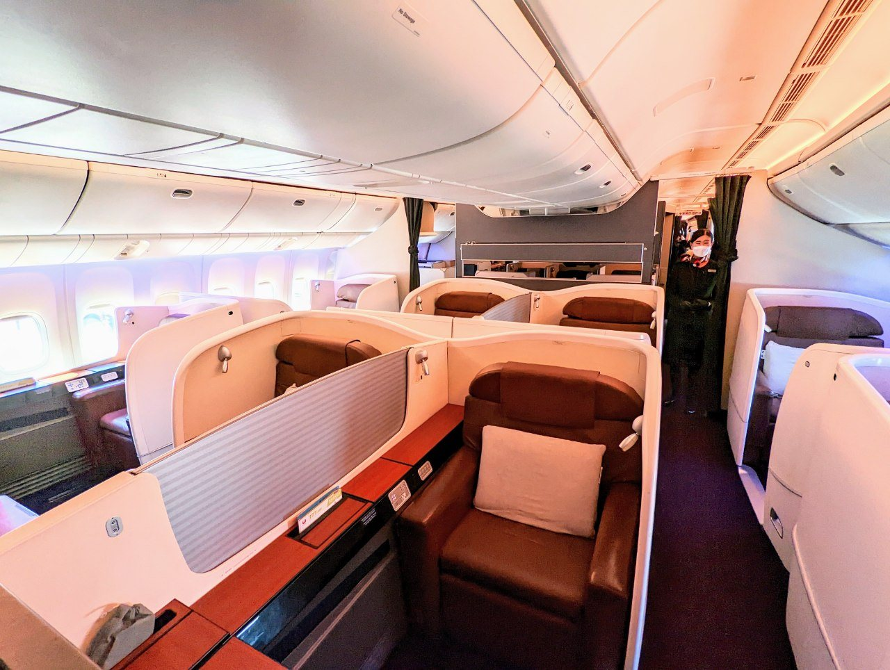
Haneda (HND) is the closer of the two main airports and sits on the bay south of the centre. Narita (NRT) is further out to the east and handles many international flights. We compare fares across the airlines that actually fly the route, so you are not stuck with one option.
Airport
Haneda · HND
To center
~30 min (rail)
Currency
JPY
Start Planning Your Tokyo Trip
Compare flights to Tokyo, and browse hotels, in one place.